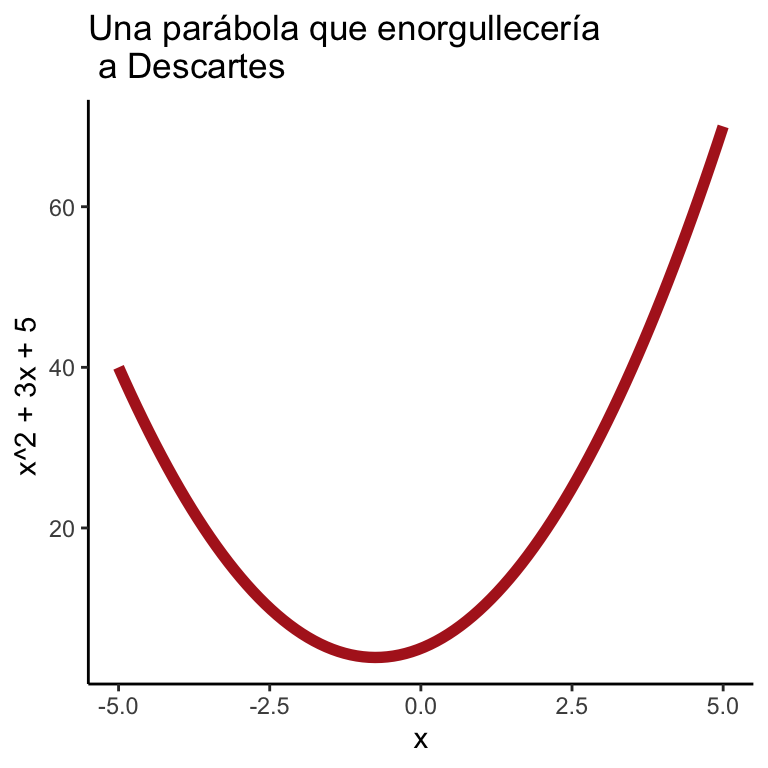

Seguro en redes sociales has visto retos como este:
oomfies solve this pic.twitter.com/0RO5zTJjKk
— #em ((???)) July 28, 2019
Han salido en noticias, han generado discusiones eternas. En este caso, la gente de Internet se volvió loca decidiendo si el resultado era \(16\) ó \(1\). El problema es claro: cada quien resuelve las operaciones en el orden que quiere. ¿Cuánto dirías tú que vale \(2 + 3 \times 5\)?1 Estas discusiones sobre los valores resultantes de las operaciones no son nuevas sino que permearon la historia de las matemáticas durante mucho tiempo. Sin embargo, desde el siglo XVI ya están resueltas: fue en torno a esos años (aunque no se sabe bien exactamente cuándo) que los matemáticos decidieron que las operaciones siempre debían seguir cierto orden. Una vez que optaron por el orden, dejaron de haber múltiples resultados: ¡ya todo mundo estaba de acuerdo en el significado de las expresiones matemáticas y por tanto cuál debía ser su resultado!
En esta sección aprenderemos el orden de las operaciones aritméticas. No es una sección particularmente retadora (en aparciencia) así que si crees que estás ya lista, lánzate a los ejercicios.
Actualmente el orden de las operaciones es como sigue:
La razón proviene de las ecuaciones algebraicas. Quizá recuerdes (y si no, créeme por ahora) que la ecuación: \[ 2x^2 + 3x + 5 \] representa una parábola como en la figura:

En la notación \[ 2x^2 + 3x + 5 \] se asume que lo primero que calculas es el \(x^2\) luego haces la multiplicación \(2 \cdot x^2\) así como el \(3\cdot x\) y finalmente sumas todo \(x^2 + 3x + 5\). Si este no fuera el orden, la notación sería mucho más engorrosa. La parábola se vería así: \[ \Big(\big(2(x^2)\big) + (3x)\Big) + 5 \]
¡Demasiados paréntesis! Es por esto que se establecieron las reglas, en el orden dado:
¡De otra manera el álgebra sería aún más espantosa! Veamos entonces, estos ejemplos de orden de las operaciones desarrollados paso a paso:
1. Se evalúa lo que está dentro de paréntesis empezando por el más profundo Lo que está entre paréntesis se hace primero comenzando por aquellos que están más adentro.
En el Álgebra de Bombelli (allá en los 1500, cuando El Quijote aún no se escribía), se registra uno de los primeros usos de paréntesis (brackets). En ella, el autor escribe: \(R^3[2\hat{m}R[0\hat{m}.121]]\) para indicar el orden de sus operaciones. En matemáticas actuales, lo que Bombelli quiso decir es: \[ \sqrt[3]{2-\sqrt{-121}} \] ¡Qué complicada notación tenían antes! (Cajori (1993))
Ejemplos:
\[\begin{equation}\nonumber \begin{aligned} \text{Ej 1:} & \quad 1 - ((2 + 7) + 5) = 1 - (9 + 5) = 1 - 14 = -13 \\ \text{Ej 2:} & \quad 3 \times (5 + 1) = 3 \times 6 = 30 \\ \text{Ej 3:} & \quad (5 + 9) \div (4 + 3) = 14 \div 7 = 2 \end{aligned} \end{equation}\]
Nota A veces en lugar de paréntesis se utilizan corchetes. Es lo mismo:
\[ 4 \times (5 + 2) = 4 \times [5 + 2] \]
2. Las potencias y raíces se evalúan en segundo lugar En particular, lo que está adentro de la raíz se evalúa primero, antes de tomar raíz. Lo mismo con una potencia dentro de paréntesis.
Ejemplos:
\[\begin{equation}\nonumber \begin{aligned} \text{Ej 1:} & \quad ((2 + 3)^2 + 4) = (5^2 + 4) = 29 \\ \text{Ej 2:} & \quad (2 + 2)^2 + (2 + 1)^2 = 4^2 + 3^2 = 16 + 9 = 25\\ \text{Ej 3:} & \quad \sqrt{6 + 3} = \sqrt{9} = 3\\ \text{Ej 4:} & \quad (1 + 7^2) \div (2^2 + 6) = (1 + 49) \div (4 + 6) = 50 \div 10 = 5 \\ \text{Ej 5:} & \quad (2^2)^3 = 4^3 = 64 \end{aligned} \end{equation}\]
Durante mucho tiempo se pensó que el signo de raíz \(\sqrt{\phantom{2}}\) provenía de una \(r\) deformada (\(r\) de raíz). Sin embargo, las nuevas investigaciones han mostrado que el \(\sqrt{\phantom{2}}\) proviene de un punto, \(\cdot\), que se fue deformando en una especie de mancha musical, ♩, hasta llegar al signo que hoy conocemos (Cajori (1993)). ¿Qué diría tu profe de español de tan mala caligrafía?
Nota Usualmente el acento circunflejo ^ se utiliza en las computadoras para significar potencia:
\[ 4^2 = 4\text{^}2 \]
3. Multiplicaciones y divisiones van tercero En caso de tener múltiples, siempre se hacen de izquierda a derecha, así como se lee en español. No olvides las reglas de los signos: producto de signos iguales de positivo (\(2 \times 2 = 4\) lo mismo que \((-3) \times (-3) = 9\)) mientras que signos distintos resultan en valores negativos (e.g. \(2\times (-5) = -10\) y \((-6) \times 7 = -42\)).
En los manuscritos medievales la cruz de San Andrés (\(\times\)) era usado para múltiples propósitos (no sólo multiplicar). Algunos de los más raros eran: 1) para marcar en una línea algo que indicara ‘miles’; así \(3\times\) serían tres mil y 2) para sumar y restar fracciones (es decir, para alguien de la Edad Media \(\frac{1}{2} \times \frac{3}{5}\) sería una suma de fracciones). Cajori (1993).
Ejemplos:
\[\begin{equation}\nonumber \begin{aligned} \text{Ej 1:} & \quad (5 + 2)\times(3^2 + 1) = 7 \times (9 + 1) = 7 \times 10 = 70.\\ \text{Ej 2:} & \quad 3\times\big(4 + (5 + 2)\times (3 - 2)\big) = 3 \times \big(4 + 7 \times 1\big) = 3 \times 11 = 33.\\ \text{Ej 3:} & \quad 3 + 5 \div 2 - 0.5 = 3 + 2.5 - 0.5 = 5.\\ \text{Ej 4:} & \quad 6 \div 3 \div 2 = 2 \div 2 = 1. \end{aligned} \end{equation}\]
Nota Existen varias notaciones equivalentes para multiplicaciones: dejar paréntesis pegados, colocar punto o bien usar el signo de multiplicación. Todo es lo mismo: \[ (2 + 1) \times (3 + 4) = (2 + 1) \cdot (3 + 4) = (2 + 1) (3 + 4) = 3 (3 + 4) \neq \underbrace{(2 + 1) 7}_{\text{NO HACER!}} \] Para división sólo existe el signo de \(\div\) o bien la línea de fracción: \[ 20 \div 5 = \frac{20}{5} \]
4. Al final se hacen sumas y restas De nuevo, se leen de izquierda a derecha.
Ejemplos:
\[\begin{equation}\nonumber \begin{aligned} \text{Ej 1:} & \quad 5 + 3 + 2\times (7 + 2) = 5 + 3 + 2 \times 9 = 5 + 3 + 18 = 8 + 18 = 26.\\ \text{Ej 2:} & \quad (7 - 2 \times 3 + 1)\div (5 + 4\times (1 + 1) - 2^2) = (7 - 6 + 1) \div (5 + 4 \times 2 - 4) = 2 \div 9 = \frac{2}{9} \approx 0.222\\ \text{Ej 3:} & \quad \big(5 + (3 + 1)^3 \big) - \big(7 \times (2 + 5) + 1\big) = \big(5 + 4^3\big) - \big( 7 \times 7 + 1\big) = (5 + 64) - (49 + 1) = 69 - 50 = 19\\ \end{aligned} \end{equation}\]
En el Papiro de Ahmes unos pies caminando hacia adelante significan suma mientras que caminando hacia atrás representan resta (Cajori (1993)). Si vivías en el angituo Egipto, seguramente tus sumas se verían así: \(4\) \(3 = 7\). ¡Imagina lo salvaje que se vería el álgebra!
Los siguientes ejercicios son SIN CALCULADORA
Evalúa las siguientes expresiones sin saltarte un solo paso:
\((3 + 2) \times 7 - 6\times 5\)
\(\Big( \big( (7 + 2) + (3 + 6) \big) - 2^2\Big)\div 2\)
\(\sqrt{4^2 + 3^2} - 4\)
\(\big( 5 \times (2 + 3) - 2^2 \times 5 + 3^2 \big)\div 4\)
\((-2)(-3)(-4) - \big( 5\times 4 \times 3 + 4 \big)\)
\(4^(2 + 1)\div 8 + 3\)
\(100\div 10\div5\times8+4\div2\)
Califica las soluciones a los siguientes ejercicios indicando si las soluciones son correctas o incorrectas. Si son incorrectas determina dónde ocurrió el primer error y corrígelo.
Coloca paréntesis en las siguientes expresiones para obtener el resultado deseado (ver ejemplo abajo). Puede que algún ejercicio no tenga solución.
\(2 \quad + \quad 5 \quad \times \quad 3 \quad - \quad 1 = 20\)
\(20 \quad \div \quad 5 \quad + \quad 4 \quad \times \quad 2 \quad - \quad 4 = 12\)
\(1 \quad + \quad 3 \quad \phantom{2}^2 \quad - \quad 6 = 10\)
\(7 \quad - \quad 2 \quad + \quad 5 \quad - \quad 9 \quad + \quad 3 \quad + \quad 2 \quad - \quad 1 = -5\)
\(2 \quad + \quad 2 \quad \phantom{2}^2 \quad + \quad 3 \quad + \quad 3 \quad \phantom{2}^2 \quad + 1 \quad 1 \quad \phantom{2}^2 = 20\)
Construye ejemplos donde si se evalúa de manera incorrecta (no tomando en cuenta el orden de las operaciones) se obtenga el resultado MALO mientras que de forma correcta se obtenga el BUENO (ver ejemplo abajo)
MALO: \(1\); BUENO: \(3\).
MALO: \(0\); BUENO: \(10\).
MALO: \(8\); BUENO: \(3\).
Coloca los signos necesarios (cuantos se requieran de la lista \((, +, -, ), \times, \div, \text{^}\)) para obtener el resultado que se pide (ver ejemplo):
Cajori, Florian. 1993. A History of Mathematical Notations. Vol. 1. Courier Corporation.
Si respondiste 25, necesitas leer esto.↩